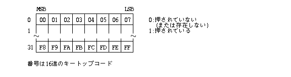

イベント管理機能は、インタラクティブなヒューマンインタフェースを実現するため に、ユーザとの対話に使用するキーボード(KB)とポインティングデバイス(PD)の 操作を「イベント」という形で統一的に取り扱う機能であり、この機能により、柔軟な インタラクティブ操作を実現することが可能となる。
キーボードおよび、ポインティングデバイスの操作は「イベント」としてシステムで1つのイベントキューに順次格納され、アプリケーションはイベントキューからイベントを順次取り出し、それに対応するアクションを実行する「イベント駆動形式」の形態を取ることになる。
マルチПроцеси та потоки環境の場合、ユーザとのインタラクティブ操作を必要とするПроцеси та потокиはある時点では必ず1つであり、ユーザとの「入力受付状態」を複数のПроцеси та потоки間で相互に受け渡していく形態をとる。
従って、ある時点で入力受付状態となっているПроцеси та потокиのみがイベント管理機能を使用してイベントを取り出すというルールを前提としており、アプリケーションはこのルールに従った動作をしなくてはいけない。イベント管理機能自体では、このルールを保証する機構は特に提供しておらず、外殻レベルで提供することになる。
イベント管理機能には、イベントの管理以外にも、キーボード、およびポインティング デバイスの状態／属性の取出し、設定等の機能も含まれており、インタラクティブな入 力装置に対する統一的なインタフェースを提供している。
以下のタイプのイベントが定義される。
ポインティングデバイスのボタンが押された時に発生する。
ポインティングデバイスのボタンが離された時に発生する。
シフトキー等の特殊キー(メタキー)以外の通常キーが押された時に発生する。
シフトキー等の特殊キー(メタキー)以外の通常キーが離された時に発生する。
自動リピートの対象となるキーが押され続けていた時に周期的に発生する。 自動リピートの対象となるキーを押してから、 最初に自動リピートキーイベントが発生するまでの時間(オフセット)、 およびその後の発生間隔(インターバル)は任意に設定可能である。
キーボード、ポインティングデバイス以外のデバイスのある種の操作に伴って発生する汎用的なイベントであり、その内容はデバイスに依存する。 フロッピーディスク等の取り外し可能メディアを装着した場合は、 このイベントが発生する。
対象とするイベントが発生していないことを示す擬似的なイベント。
アプリケーションにより定義され使用されるイベントであり、 アプリケーション間での通信機能として使用される。 アプリケーションイベントのいくつかは外殻により、その意味が定義さ れる。
物理的なキーボードが存在しない場合は、イベント管理の段階では EV_KEYDWN, EV_KEYUP, EV_AUTOKEYは発生しない。ソフトキーボードのようなフロントエンドПроцеси та потокиで、ボタンイベントが適当なキーイベントに変換されて、アプリケーションに渡される。
イベントのタイプは、0 〜 15 のタイプ番号で区別される。また各イベントタイプに 対応したタイプマスクが定義されており、このマスクにより、対象とするイベントの タイプを指定することができる。タイプマスクはビット対応となっており、"1"のビ ットに対応するタイプのイベントが対象とされる。ただし、ヌルイベントに対しては、その性質上マスクは定義されない。
イベント タイプ番号 タイプマスク
EV_NULL 0 --------
EV_BUTDWN 1 EM_BUTDWN (0x0001)
EV_BUTUP 2 EM_BUTUP (0x0002)
EV_KEYDWN 3 EM_KEYDWN (0x0004)
EV_KEYUP 4 EM_KEYUP (0x0008)
EV_AUTKEY 5 EM_AUTKEY (0x0010)
EV_DEVICE 6 EM_DEVICE (0x0020)
EV_RSV 7 EM_RSV (0x0040) ( 予約 )
EV_APPL1 8 EM_APPL1 (0x0080)
：： ：：
EV_APPL8 15 EM_APPL8 (0x4000)
なお、タイプマスクとしては以下の特殊なマスクも用意されている。
EM_NULL 0x0000
EM_ALL 0x7fff
イベントは以下に示す構造体で定義される。
typedef struct {
W type; /* イベントタイプ */
UW time; /* イベント発生時刻 */
PNT pos; /* イベント発生時のPD位置 */
EVDATA data; /* イベントの固有データ */
UW stat; /* メタキー、PDボタン状態 */
} EVENT;
typedef struct point {
H x; /* 水平座標値 */
H y; /* 垂直座標値 */
} PNT;
なお、アプリーションイベントでの pos の意味はイベントの定義に依存する。
typedef union {
struct { /* EV_KEYUP,EV_KEYDWN,EV_AUTKEY */
UH keytop; /* キートップコード */
TC code; /* 文字コード */
} key;
struct { /* EV_DEVICE */
H kind; /* デバイスイベント種別 */
H devno; /* デバイス番号 */
} dev;
W info; /* その他のイベント用データ */
} EVDATA;
EV_KEYDWN, EV_KEYUP, EV_AUTKEY の場合は、key が適用され、キーの物理的な位置を示すキートップコードと、エンコードされた文字コードからなる。
kind ＝ DE_unknown 0 -- 未定義
DE_MOUNT 0x01 -- メディア挿入
DE_EJECT 0x02 -- メディア排出
DE_ILLMOUNT 0x03 -- メディア不正挿入
DE_ILLEJECT 0x04 -- メディア不正排出
DE_REMOUNT 0x05 -- メディア再挿入
DE_CARDBATLOW 0x06 -- カードバッテリ残量警告
DE_CARDBATFAIL 0x07 -- カードバッテリ異常
DE_REQEJECT 0x08 -- メディア排出要求
0x09〜 -- 予約
これらのデバイスイベントは、
Драйвери пристроївーからの事象通知により発生する。
ES_BUT 0x0001 -- PDのメインボタン状態
ES_BUT2 0x0002 -- PDのサブボタン状態
ES_ALPH 0x0004 -- 英語ロックキー状態
ES_KANA 0x0008 -- カタカナロックキー状態
ES_LSHFT 0x0010 -- 左シフトキー状態
ES_RSHFT 0x0020 -- 右シフトキー状態
ES_EXT 0x0040 -- 拡張シフトキー状態
ES_CMD 0x0080 -- 命令シフトキー状態
ポインティングデバイスのサブボタン(Меню та командні інтерфейсиボタン)は、押されてもイベントは発生しない。また、上記のキーはメタキーであり、押されてもイベントは発生しない。
ES_LLSHFT 0x00000100 -- 左シフト簡易ロック
ES_LRSHFT 0x00000200 -- 右シフト簡易ロック
ES_LEXT 0x00000400 -- 拡張簡易ロック
ES_LCMD 0x00000800 -- 命令簡易ロック
ES_TLSHFT 0x00001000 -- 左シフト一時シフト
ES_TRSHFT 0x00002000 -- 右シフト一時シフト
ES_TEXT 0x00004000 -- 拡張一時シフト
ES_TCMD 0x00008000 -- 命令一時シフト
ES_HAN 0x00010000 -- 半角キー
ES_NODSP 0x00200000 -- ポインタ非表示
ES_PDSIM 0x00C00000 -- PDシュミレーション
これらの状態変化はイベントを発生しない。
イベントキューは、システムに唯 1 つ用意されているイベント格納用のキューであり、イベントが発生順に格納される。キューに空きが無い場合は、新規に発生したイベント、即ち、一番新しいイベントはキューに入れられず、捨てられることになる。
イベントキューに格納されるイベントは、システムイベントマスクにより制限される。即ち、システムイベントマスクの "1" のビットに対応するタイプのイベントのみがイベントキューに入り、"0" のビットに対応するタイプのイベントはシステム全体として無視されて捨てられる。
システムのスタートアップ時点では、イベントキューは空、システムイベントマスクは 0 となっており、イベント管理機能は事実上動作していない状態であるため、必ずシステムイベントマスクを適当な値に設定する必要がある。
イベントには、そのタイプに応じた以下に示す優先度が付けられており、高い優先度のイベントから取り出される。同一優先度の場合は、発生順に取り出される。
( 1: 最高優先度 〜 6:最低優先度 )
1. EV_APPL1〜4
2. EV_BUTDWN, EV_BUTUP, EV_KEYDWN, EV_KEYUP
3. EV_AUTKEY
4. EV_DEVICE, EV_RSV
5. EV_APPL5〜8
6. EV_NULL
ヌルイベント(EV_NULL)、および自動リピートキーイベント(EV_AUTKEY) は、実際にはイベントキューには入れられず、イベントの取り出し要求時に自動的に生成されることになる。
TRONキーボードにおいて以下のキーはメタキーであり、押したり離したりした場合でもイベントは発生しないが、その状態はイベント内の stat フィールドにセットされ、また文字コードのエンコードに使用される。
メタキーは先に押された場合のみ文字のエンコードに対して有効となる。
自動リピートキーイベント(EV_AUTKEY) は、自動リピートの対象キーが押し続けられた場合に発生する。
自動リピートの対象キーはイベントを発生しないメタキーを除いて任意に設定可能であ り、システム立ち上げ時には、メタキーを除いたすべてのキーを自動リピートの対象と する。
押してから最初に発生するまでの時間(オフセット時間)と、その後の発生間隔(インタ ーバル時間)の設定／取出し用のシステムコールが提供されている。 この時間はミリ秒 単位である。
但し、自動リピートキーイベントの発生間隔はインプリメントに依存しており、オフ セット時間とインターバル時間は、イベント発生時刻の単位へ丸められる。
キーイベントでは、キーの物理的位置を示すキートップコードと、エンコードされた文字コードを戻す。
キートップコードは、キーの物理的位置に応じた固定的な8ビットのコード ( 0 〜255 ) であり、メタキーの状態により異なった文字コードにエンコードされる。
文字コードへのエンコードは「文字コード変換表」を使用して行なわれる。通常、ユーザーの使用する言語、入力方式(ローマ字入力／かな入力等)に対応した変換表が、ユーザー毎に設定されることになる。
文字コード変換表は以下の構造を持つ。
typedef struct {
W keymax; /* 実際の最大キー数 (1〜256) */
W kctmax; /* 実際の変換表の数 (1〜64) */
UH kctsel[KCTSEL]; /* 変換表の番号 (0〜kctmax-1の値) */
UH kct[KCTMAX]; /* 変換表本体 (keymax×kctmax個の要素) */
} KeyTab;
メタキー状態：CERLKA
A:「日本語／英語」キー (0:日本語)
K:「ひらがな／カタカナ」キー (0:ひらがな)
L:「左シフト」キー
R:「右シフト」キー
E:「拡張シフト」キー
C:「命令シフト」キー
キーが押されているか否かの状態は、1つのキーを1ビットに対応させた以下に示す KeyMap 配列により定義され、この KeyMap 配列を取り出すためのシステムコールが提 供されている。
typedef UB KeyMap[KEYMAX/8]; -- キー状態配列

なお、この KeyMap 配列は、自動リピートの対象となるキーの設定 / 取出しにも使用される。この場合、"1 "のビットに対応するキーが自動リピートの対象となる。
現在接続されているキーボードの種類を知るために以下にように定義されるキーボードIDを取り出すことが可能である。
typedef struct {
UH kind; /* キーボードタイプ */
UH maker; /* メーカーID */
UB id[4]; /* メーカー依存キーボードID */
} KBD_ID;
P= 0 -- ポインティングデバイスがキーボードに内蔵されていない
1 -- ポインティングデバイスがキーボードに内蔵されている
M= 0 -- ロックキーは電子ロック式
1 -- ロックキーはメカニカルロック方式
T=0x00 -- 未定義キーボード
0x01 -- TRON日本語キーボード
0x02〜0x3F -- 予約 (TRON 仕様のキーボード)
0x40 -- IBM 101 系英語キーボード
0x41 -- IBM 106 系日本語キーボード
0x42〜0x7f -- 予約 (TRON 仕様以外のキーボード)
ポインティングデバイスは、スクリーン上に表示されているオブジェクトを選択するために使用され、その現在位置として、スクリーンの解像度に対応したレンジの絶対座標値を持つ。 絶対座標値とは、スクリーンの左上の点を ( 0, 0 )とし、スクリーン上の 1 ピクセルを単位とした座標値である。
ポインティングデバイスは、その動作方式から以下の 2 種類に大きく分類される。
相対動作タイプの場合は、ポインティングデバイスの(基準)位置を任意に設定するこ とが可能であるが、絶対動作タイプの場合は、位置の設定は不可となる。
なお、ポインティングデバイスによっては、絶対／相対動作の両方の動作を切り換える ことが可能なものもある。
ポインティングデバイスの属性として以下のものが定義され、取り出し/設定が可能である。
typedef union {
struct { /* EV_KEYUP,EV_KEYDWN,EV_AUTKEY */
UH keytop; /* キートップコード */
TC code; /* 文字コード */
} key;
struct { /* EV_DEVICE */
H kind; /* デバイスイベント種別 */
H devno; /* デバイス番号 */
} dev;
W info; /* その他のイベント用データ */
} EVDATA;
typedef struct {
W type; /* イベントタイプ */
UW time; /* イベント発生時間(m sec) */
PNT pos; /* イベント発生時のPD位置 */
EVDATA data; /* イベントの固有データ */
UW stat; /* メタキー、PDボタン状態 */
} EVENT;
#define EV_NULL 0 /* ヌルイベント */ #define EV_BUTDWN 1 /* ボタンダウン */ #define EV_BUTUP 2 /* ボタンアップ */ #define EV_KEYDWN 3 /* キーダウン */ #define EV_KEYUP 4 /* キーアップ */ #define EV_AUTKEY 5 /* 自動キーリピート */ #define EV_DEVICE 6 /* デバイスイベント */ #define EV_RSV 7 /* 予約 */ #define EV_APPL1 8 /* アプリケーションイベント#1 */ #define EV_APPL2 9 /* アプリケーションイベント#2 */ #define EV_APPL3 10 /* アプリケーションイベント#3 */ #define EV_APPL4 11 /* アプリケーションイベント#4 */ #define EV_APPL5 12 /* アプリケーションイベント#5 */ #define EV_APPL6 13 /* アプリケーションイベント#6 */ #define EV_APPL7 14 /* アプリケーションイベント#7 */ #define EV_APPL8 15 /* アプリケーションイベント#8 */
#define EM_NULL 0x0000 #define EM_ALL 0x7fff #define EM_BUTDWN 0x0001 #define EM_BUTUP 0x0002 #define EM_KEYDWN 0x0004 #define EM_KEYUP 0x0008 #define EM_AUTKEY 0x0010 #define EM_DEVICE 0x0020 #define EM_RSV 0x0040 #define EM_APPL1 0x0080 #define EM_APPL2 0x0100 #define EM_APPL3 0x0200 #define EM_APPL4 0x0400 #define EM_APPL5 0x0800 #define EM_APPL6 0x1000 #define EM_APPL7 0x2000 #define EM_APPL8 0x4000
#define ES_BUT 0x00000001 /* PDメインボタン */ #define ES_BUT2 0x00000002 /* PDサブボタン */ #define ES_ALPH 0x00000004 /* 英語ロックキー */ #define ES_KANA 0x00000008 /* カタカナロックキー */ #define ES_LSHFT 0x00000010 /* 左シフトキー */ #define ES_RSHFT 0x00000020 /* 右シフトキー */ #define ES_EXT 0x00000040 /* 拡張キー */ #define ES_CMD 0x00000080 /* 命令キー */ #define ES_LLSHFT 0x00000100 /* 左シフト簡易ロック */ #define ES_LRSHFT 0x00000200 /* 右シフト簡易ロック */ #define ES_LEXT 0x00000400 /* 拡張簡易ロック */ #define ES_LCMD 0x00000800 /* 命令簡易ロック */ #define ES_TLSHFT 0x00001000 /* 左シフト一時シフト */ #define ES_TRSHFT 0x00002000 /* 右シフト一時シフト */ #define ES_TEXT 0x00004000 /* 拡張一時シフト */ #define ES_TCMD 0x00008000 /* 命令一時シフト */ #define ES_HAN 0x00010000 /* 半角キー */ #define ES_NODSP 0x00400000 /* ポインタ非表示 */ #define ES_PDSIM 0x00800000 /* PDシュミレーション */
#define IM_HIRA 0x0000 /* 日本語ひらがな */ #define IM_ALPH (ES_ALPH) /* 英語(小文字) */ #define IM_KATA (ES_KANA) /* 日本語カタカナ */ #define IM_CAPS (ES_ALPH | ES_KANA) /* 英語(大文字) */ #define IM_MASK (ES_ALPH | ES_KANA)
#define KIN_KANA 0x0000 /* かな入力モード */ #define KIN_ROMAN 0x0001 /* ローマ字入力モード */
typedef enum {
DE_unknown = 0, /* 未定義 */
DE_MOUNT = 0x01, /* メディア挿入 */
DE_EJECT = 0x02, /* メディア排出 */
DE_ILLMOUNT = 0x03, /* メディア不正挿入 */
DE_ILLEJECT = 0x04, /* メディア不正排出 */
DE_REMOUNT = 0x05, /* メディア再挿入 */
DE_CARDBATLOW = 0x06, /* カードバッテリ残量警告 */
DE_CARDBATFAIL = 0x07, /* カードバッテリ異常 */
DE_REQEJECT = 0x08 /* メディア排出要求 */
} DevEvtKind;
#define EP_NONE 0x0000 /* time,pos,stat はそのまま */ #define EP_POS 0x0001 /* pos に現在PD位置を設定 */ #define EP_STAT 0x0002 /* stat に現在メタキー状態を設定 */ #define EP_TIME 0x0004 /* time に現在時間を設定 */ #define EP_ALL 0x0007 /* pos,stat,time に現在値を設定 */
#define PD_REV 0x1000 /* 左右反転 */ #define PD_ABS 0x0100 /* 絶対座標タイプ */ #define PD_REL 0x0000 /* 相対座標タイプ */ #define PD_SCMSK 0x00f0 /* スキャン速度 (マスク) */ #define PD_SNMSK 0x000f /* 感度 (マスク) */
typedef struct {
UH kind; /* キーボードタイプ */
UH maker; /* メーカーID */
UB id[4]; /* メーカー依存キーボードID */
} KBD_ID;
#define KEYMAX 256
typedef UB KeyMap[KEYMAX/8];
#define KCTSEL 64 #define KCTMAX 4000
typedef struct {
W keymax; /* 実際の最大キー数 */
W kctmax; /* 実際の変換表の数 */
UH kctsel[KCTSEL]; /* 変換表の番号 */
UH kct[KCTMAX]; /* 変換表本体 */
} KeyTab;
/* ＜取り出し＞ */
#define GET_BUZ_BEEP 0x0000 /* 音色：標準の警告音 */
#define GET_BUZ_PDON 0x0001 /* 音色：ボタンONのクリック音 */
#define GET_BUZ_PDOFF 0x0002 /* 音色：ボタンOFFのクリック音 */
#define GET_BUZ_KEYON 0x0003 /* 音色：キーONのクリック音 */
#define GET_BUZ_KEYOFF 0x0004 /* 音色：キーOFFのクリック音 */
#define GET_BUZ_VOLUME 0x0010 /* 音量 */
/* ＜設定＞ */
#define SET_BUZ_BEEP 0x0100 /* 音色：標準の警告音 */
#define SET_BUZ_PDON 0x0101 /* 音色：ボタンONのクリック音 */
#define SET_BUZ_PDOFF 0x0102 /* 音色：ボタンOFFのクリック音 */
#define SET_BUZ_KEYON 0x0103 /* 音色：キーONのクリック音 */
#define SET_BUZ_KEYOFF 0x0104 /* 音色：キーOFFのクリック音 */
#define SET_BUZ_VOLUME 0x0110 /* 音量 */
|
WERR get_evt(W t_mask, EVENT* evt, W opt)
W t_mask 対象イベントタイプマスク
EVENT* evt 取得したイベントの格納領域
W opt 取得属性
( CLR ‖ NOCLR )
CLR イベントキューから取り除く。
NOCLR イベントキューから取り除かない。
≧0 正常(得られたイベントのタイプ) ＜0 エラー(エラーコード)
ER_ADR : アドレス(evt)のアクセスは許されていない。 ER_IO : 入出力エラーが発生した(何らかのデバイスエラーが発生した)。 ER_PAR : パラメータが不正である(t_mask≦0、optが不正)。 ER_NOSPC : システムのメモリ領域が不足した。
|
ERR put_evt(EVENT* evt, W opt)
EVENT* evt 発生するイベント
W opt 発生属性
( EP_NONE ‖ EP_ALL ‖ ([ EP_POS ] | [ EP_STAT ] | [EP_TIME]) )
EP_NONE time, pos, stat は evt の内容のままとする。
EP_ALL time, pos, stat のすべてを設定する。
EP_POS pos に現在のポインティングデバイスの位置を設定する。
EP_STAT stat に現在のメタキー/ PD ボタン状態を設定する。
EP_TIME time に現在のイベントタイマーの値を設定する。
＝0 正常 ＜0 エラー(エラーコード)
ER_ADR : アドレス(evt)のアクセスは許されていない。 ER_IO : 入出力エラーが発生した(何らかのデバイスエラーが発生した)。 ER_NOSPC : システムのメモリ領域が不足した。 ER_PAR : パラメータが不正である(イベントのタイプが不正、optが不正)。
|
ERR clr_evt(W t_mask, W last_mask)
W t_mask クリア対象イベントタイプマスク
＝EM_ALL 全イベントタイプ
W last_mask クリア終了イベントタイプマスク
＝EM_ALL イベントを1つだけクリア
＝EM_ALL 対象はイベントキューの最後まで
＝0 正常 ＜0 エラー(エラーコード)
t_mask last_mask 動作
EM_ALL EM_NULL 全てのイベントをクリア
-- EM_ALL t_mask で指定したイベントを1つだけクリア
EM_ALL EM_ALL 先頭のイベントを1つだけクリア
ER_PAR : パラメータが不正である(t_mask≦0、last_mask<0)。
|
WERR get_pdp(PNT* pos)
PNT* pos PD位置の格納領域
≧0 正常(発生しているイベントのタイプ) ＜0 エラー(エラーコード)
ER_ADR : アドレス(pos)のアクセスは許されていない。 ER_BUSY : PDはビジー状態である。 ER_DEV : デバイスに対しての操作は許されていない。 ER_ERDEV : 装置異常が発生した。 ER_IO : 入出力エラーが発生した。 ER_NODEV : デバイスへのアクセスができない。 ER_NOSPC : システムのメモリ領域が不足した。
|
WERR set_pdp(PNT pos)
PNT pos 設定するPD位置(絶対座標)
＝0 正常(PD位置設定可) ＝1 正常(PD位置設定不可) ＜0 エラー(エラーコード)
ER_BUSY : PDはビジー状態である。 ER_DEV : デバイスに対しての操作は許されていない。 ER_ERDEV : 装置異常が発生した。 ER_IO : 入出力エラーが発生した。 ER_NODEV : デバイスへのアクセスができない。 ER_PAR : パラメータが不正である(pos が座標レンジ外)。 ER_NOSPC : システムのメモリ領域が不足した。
|
ERR get_etm(UW* time)
UW *time イベントタイマー値の格納領域
＝0 正常 ＜0 エラー(エラーコード)
ER_ADR : アドレス(time)のアクセスは許されていない。
|
ERR get_kmp(KeyMap keymap)
KeyMap keymap キー状態の格納領域
＝0 正常 ＜0 エラー(エラーコード)
現在のキー状態を取り出す。
ER_ADR : アドレス(keymap)のアクセスは許されていない。 ER_BUSY : キーボードはビジー状態である。 ER_DEV : デバイスに対しての操作は許されていない。 ER_ERDEV : 装置異常が発生した。 ER_IO : 入出力エラーが発生した。 ER_NODEV : デバイスへのアクセスができない。 ER_NOSPC : システムのメモリ領域が不足した。
|
WERR chg_emk(W mask)
W mask 設定するシステムイベントマスク
<0 変更しない(現在のシステムイベントマスクの取得)
≧0 正常(変更前のシステムイベントマスク)
発生しない。
|
ERR set_krp(W offset, W interval)
W offset 自動リピート最初の発生までの時間(ミリ秒) W interval 自動リピート発生間隔(ミリ秒)
＝0 正常 ＜0 エラー(エラーコード)
ER_PAR : パラメータが不正である(offset≦0,interval≦0)。
|
ERR get_krp(W* offset, W* interval)
W *offset 自動リピート最初の発生までの時間(ミリ秒)の格納領域 W *interval 自動リピート発生間隔(ミリ秒)の格納領域
＝0 正常 ＜0 エラー(エラーコード)
ER_ADR : アドレス(offset,interval)のアクセスは許されていない。
|
ERR set_krm(KeyMap keymap)
KeyMap keymap 自動リピート対象キーマップ
＝0 正常 ＜0 エラー(エラーコード)
ER_ADR : アドレス(keymap)のアクセスは許されていない。
|
ERR get_krm(KeyMap keymap)
KeyMap keymap 自動リピート対象キーマップの格納領域
＝0 正常 ＜0 エラー(エラーコード)
ER_ADR : アドレス(keymap)のアクセスは許されていない。
|
ERR get_kid(KBD_ID* id)
KBD_ID* id キボードIDの格納領域
＝0 正常 ＜0 エラー(エラーコード)
キーボードIDを取り出す。
ER_ADR : アドレス(id)のアクセスは許されていない。 ER_BUSY : キーボードはビジー状態である。 ER_DEV : デバイスに対しての操作は許されていない。 ER_ERDEV : 装置異常が発生した。 ER_IO : 入出力エラーが発生した。 ER_NODEV : デバイスへのアクセスができない。 ER_NOSPC : システムのメモリ領域が不足した。
|
WERR get_ktb(KeyTab* keytab)
KeyTab* keytab 文字コード変換表の格納領域
NULL 格納しない
≧0 正常(文字コード変換表の全体のバイトサイズ) ＜0 エラー(エラーコード)
ER_ADR : アドレス(keytab)のアクセスは許されていない。 ER_BUSY : キーボードはビジー状態である。 ER_DEV : デバイスに対しての操作は許されていない。 ER_ERDEV : 装置異常が発生した。 ER_IO : 入出力エラーが発生した。 ER_NODEV : デバイスへのアクセスができない。 ER_NOSPC : システムのメモリ領域が不足した。
|
ERR set_ktb(KeyTab* keytab)
KeyTab* keytab 設定する文字コード変換表
＝0 正常 ＜0 エラー(エラーコード)
ER_ADR : アドレス(keytab)のアクセスは許されていない。 ER_BUSY : キーボードはビジー状態である。 ER_DEV : デバイスに対しての操作は許されていない。 ER_ERDEV : 装置異常が発生した。 ER_IO : 入出力エラーが発生した。 ER_NODEV : デバイスへのアクセスができない。 ER_PAR : パラメータが不正である(keytab の内容が不正)。 ER_NOSPC : システムのメモリ領域が不足した。
|
WERR chg_pda(W atr)
W atr ポインティングデバイス属性
<0 変更しない(現在のポインティングデバイス属性の取得)
≧0 正常(変更前のPD属性) ＜0 エラー(エラーコード)
xx..xx xxxV xxxA RRRR SSSS
A： 動作タイプ ( 0: 相対座標タイプ、 1: 絶対座標タイプ )
S： 感度 ( 0: 最低感度 〜 15: 最高感度 )
R： スキャン速度 ( 0: 最低速 〜 15: 最高速 )
V： 左右反転 ( 0: 右手モード、 1: 左手モード )
x： 予約 ( = 0 )
動作タイプの変更が不可能の場合はエラー(ER_DEV)となる。
ER_BUSY : PDはビジー状態である。 ER_DEV : デバイスに対しての操作は許されていない。 ER_ERDEV : 装置異常が発生した。 ER_IO : 入出力エラーが発生した。 ER_NODEV : デバイスへのアクセスができない。 ER_PAR : パラメータが不正である(atr)。 ER_NOSPC : システムのメモリ領域が不足した。
|
ERR sig_buz(W type)
W type ブザー音の種別
= 0 標準の警告ブザー
= -1 ブザーの停止
0xTTTTHHHH
TTTT≠0の場合
HHHH≧0 の場合 (ブザー)
T: 鳴らす時間 (1 〜 32767 msec)
H: 鳴らす周波数 (0 〜 32767 Hz)
HHHH<0 の場合 (メロディー)
T: 繰り返し回数 (1 〜 32767)
H: メロディー番号 (-1 〜 -100)
TTTT= 0 の場合 (ブザー)
type = 0x0000thhh
t: 鳴らす時間 (100msec 単位)
h: 鳴らす周波数 (10Hz 単位)
＝0 正常 ＜0 エラー(エラーコード)
ER_DEV : デバイスに対しての操作は許されていない。 ER_ERDEV : 装置異常が発生した。 ER_IO : 入出力エラーが発生した。 ER_NODEV : デバイスへのアクセスができない。 ER_PAR : パラメータが不正である。
|
ERR ctl_buz(W kind, UW *val)
W kind 制御操作の種別 UW *val 制御操作の値
＝0 正常 ＜0 エラー(エラーコード)
kind: GET_BUZ_BEEP 音色：標準の警告音の取り出し
GET_BUZ_PDON 音色：ボタンONのクリック音の取り出し
GET_BUZ_PDOFF 音色：ボタンOFFのクリック音の取り出し
GET_BUZ_KEYON 音色：キーONのクリック音の取り出し
GET_BUZ_KEYOFF 音色：キーOFFクリック音の取り出し
GET_BUZ_VOLUME 音量：取り出し
SET_BUZ_BEEP 音色：標準の警告音の設定
SET_BUZ_PDON 音色：ボタンONのクリック音の設定
SET_BUZ_PDOFF 音色：ボタンOFFのクリック音の設定
SET_BUZ_KEYON 音色：キーONのクリック音の設定
SET_BUZ_KEYOFF 音色：キーOFFのクリック音の設定
SET_BUZ_VOLUME 音量：設定
val: 音色： DTTT TTTT TTTT TTTT HHHH HHHH HHHH HHHH
D：0：有効、1：無効(音なし)
H≧0 の場合 (ブザー)
T：時間(msec)
H：周波数(Hz)
H<0 の場合 (メロディー)
T：繰り返し回数
H：メロディー番号
音量： LLLL LLLL LLLL LLLL RRRR RRRR RRRR RRRR
L：左チャンネル音量 (無音=0 〜 最大=0xffff)
R：右チャンネル音量 (無音=0 〜 最大=0xffff)
音量は、すべての警告音、クリック音に共通である。
ER_PAR : パラメータが不正である。 ER_ADR : アドレス(val)のアクセスは許されていない。
|
ERR req_evt(W t_mask)
W t_mask 対象イベントタイプマスク
＝0 正常 ＜0 エラー(エラーコード)
Повідомлення形式
struct {
W msg_type; /* Повідомленняタイプ = MS_SYS5 */
W msg_size; /* Повідомленняサイズ */
EVENT evt; /* イベント */
VB info[]; /* 追加情報 */
}
msg_type は、MS_SYS5 固定となる。ER_PAR : パラメータが不正である。 ER_LIMIT : イベントПовідомлення要求の登録数がシステムの制限を超えた。
|
WERR las_evt(W t_mask)
W t_mask 対象イベントタイプマスク
≧0 正常(最終イベント発生からの経過時間) ＜0 エラー(エラーコード)
ER_PAR : パラメータが不正である。